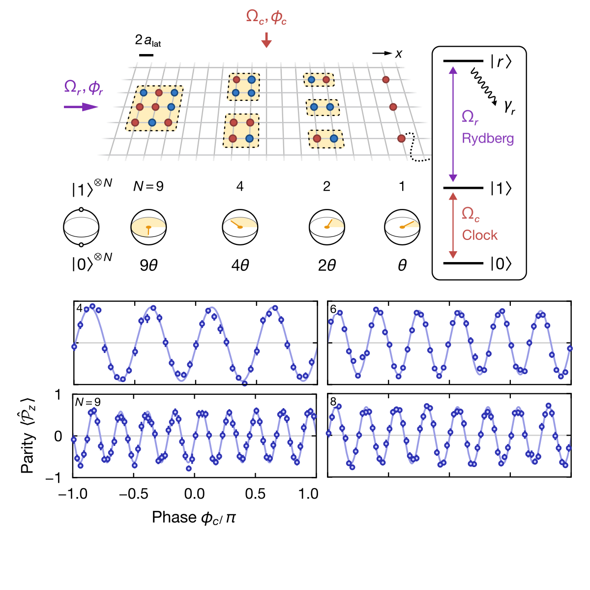
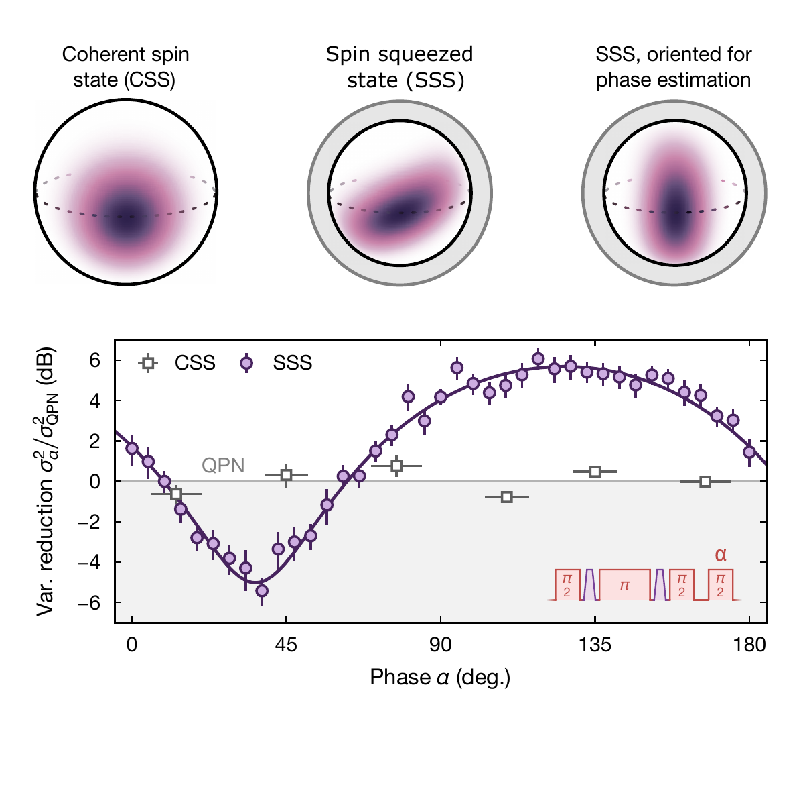
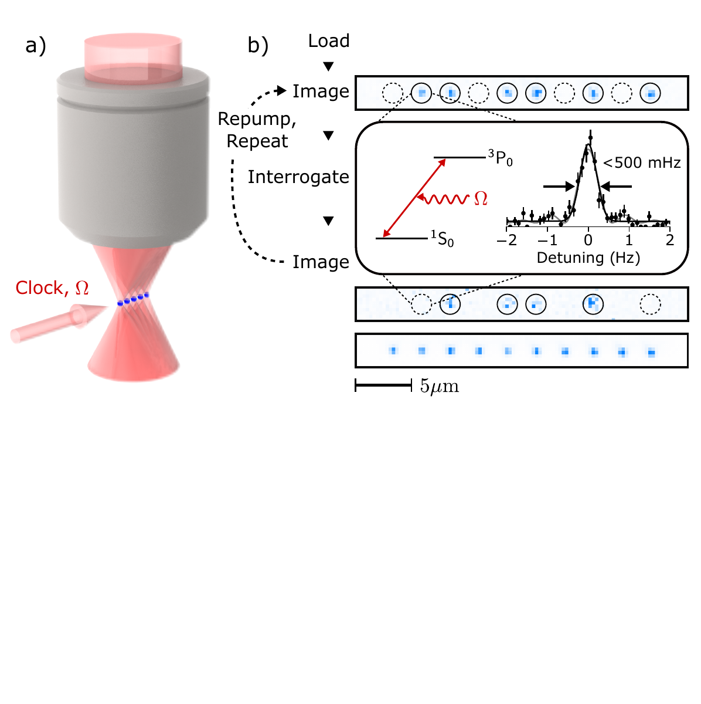

Autoionization-Enhanced Rydberg Dressing by Fast Contaminant Removal
Alec Cao, Theodor Lukin Yelin, William J. Eckner, Nelson Darkwah Oppong, and Adam M. Kaufman
Physical Review Letters 134, 133201 (2025)
Publications are listed newest first within each period.
Publications to be added.
Alec Cao, Theodor Lukin Yelin, William J. Eckner, Nelson Darkwah Oppong, and Adam M. Kaufman
Physical Review Letters 134, 133201 (2025)
Alec Cao, William J. Eckner, Theodor Lukin Yelin, Aaron W. Young, Sven Jandura, Lingfeng Yan, Kyungtae Kim, Guido Pupillo, Jun Ye, Nelson Darkwah Oppong, and Adam M. Kaufman
Nature 634, 315–320 (2024)

Aaron W. Young, Shawn Geller, William J. Eckner, Nathan Schine, Scott Glancy, Emanuel Knill, and Adam M. Kaufman
Nature 629, 311–316 (2024)
William J. Eckner, Nelson Darkwah Oppong, Alec Cao, Aaron W. Young, William R. Milner, John M. Robinson, Jun Ye, and Adam M. Kaufman
Nature 621, 734–739 (2023)

Aaron W. Young, William J. Eckner, Nathan Schine, Andrew M. Childs, and Adam M. Kaufman
Science 377, 885–889 (2022)
Nathan Schine, Aaron W. Young, William J. Eckner, Michael J. Martin, and Adam M. Kaufman
Nature Physics 18, 1067–1073 (2022)
William J. Eckner, Aaron W. Young, Nathan Schine, and Adam M. Kaufman
Review of Scientific Instruments 92, 093001 (2021)
Aaron W. Young, William J. Eckner, William R. Milner, Dhruv Kedar, Matthew A. Norcia, Eric Oelker, Nathan Schine, Jun Ye, and Adam M. Kaufman
Nature 588, 408–413 (2020)
Matthew A. Norcia, Aaron W. Young, William J. Eckner, Eric Oelker, Jun Ye, and Adam M. Kaufman
Science 366, 93–97 (2019)

Joshua B. Burt, Murat Demirtaş, William J. Eckner, Natasha M. Navejar, Jie Lisa Ji, William J. Martin, Alberto Bernacchia, Alan Anticevic, and John D. Murray
Nature Neuroscience 21, 1251–1259 (2018)